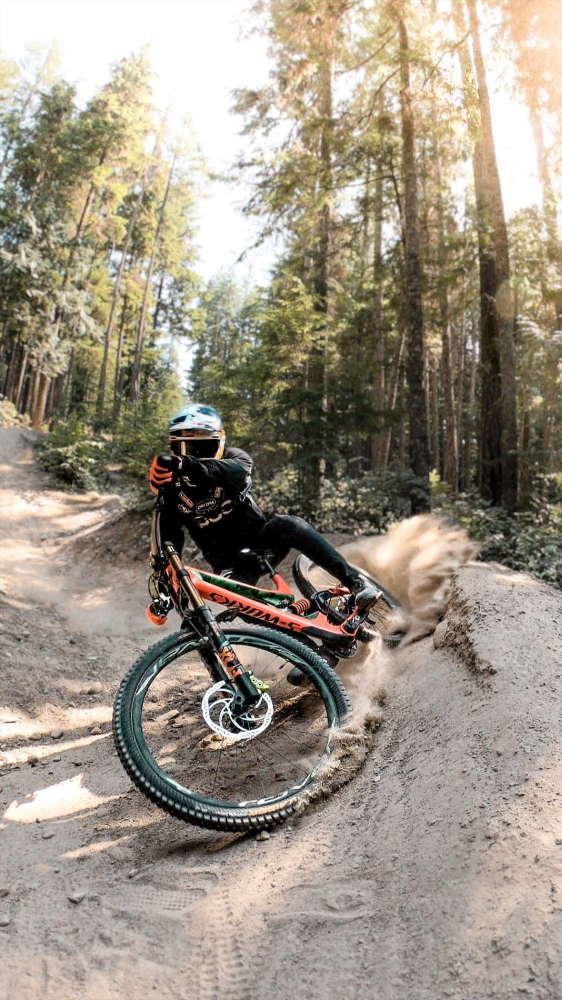
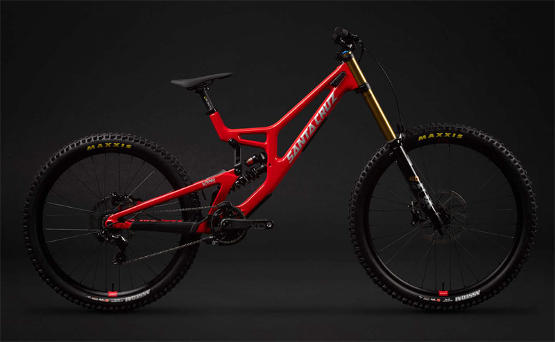
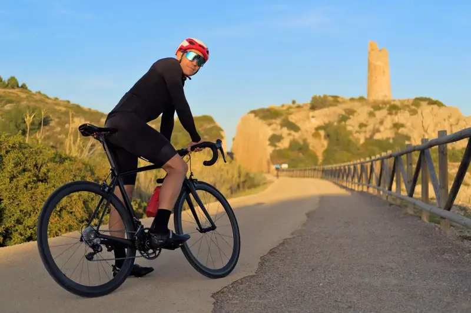
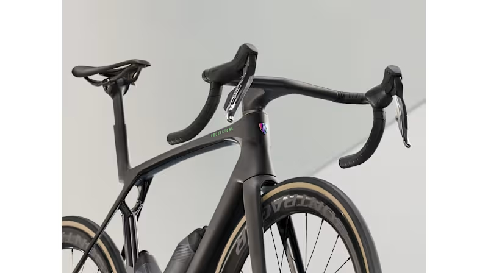
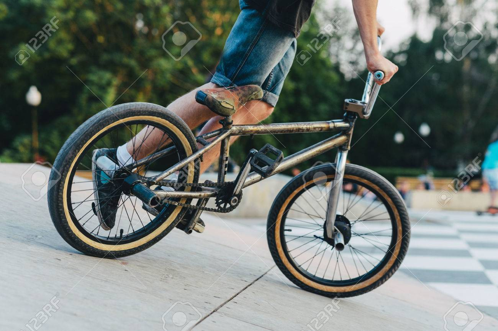
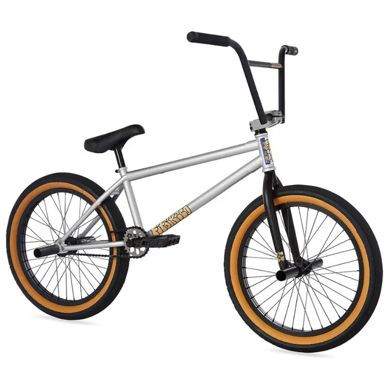

DISCIPLINAS
• Montaña (MTB)
• Ruta / Carreras
• Urbanas / BMX
CONSEJO PRO
Revisa siempre la presión de tus llantas y la suspensión según el tipo de terreno que vayas a rodar.

1. CICLISMO DE MONTAÑA (MTB)
El ciclismo de montaña está diseñado para recorrer senderos difíciles, rocas y descensos empinados. En esta categoría, la marca líder mundial es Santa Cruz Bicycles, famosa por sus cuadros de carbono y su suspensión VPP. También destaca Specialized con sus modelos Stumpjumper, ofreciendo un control total en terrenos extremos.
[ Leer más sobre Ciclismo de Montaña ]


2. CICLISMO DE RUTA / CARRERAS
Esta disciplina se enfoca puramente en la velocidad, la aerodinámica y las largas distancias sobre asfalto. Aquí, la marca Specialized domina el mercado con bicicletas de nivel profesional como la Tarmac y la Roubaix, construidas para ser ultra ligeras. Otra marca sumamente importante en este sector es Trek, reconocida por su gran rendimiento en el Tour de Francia.
[ Leer más sobre Ciclismo de Ruta ]


3. BICICLETAS URBANAS Y BMX
Pensadas para el día a día en la ciudad, el transporte económico o la realización de trucos en parques y rampas. Tanto Specialized como Trek fabrican bicicletas urbanas de alta durabilidad con tecnología antirrobo. Para el mundo del BMX extremo, marcas especializadas se encargan de crear cuadros pequeños de acero reforzado capaces de aguantar impactos de saltos altos.
[ Leer más sobre Estilo Urbano y BMX ]

